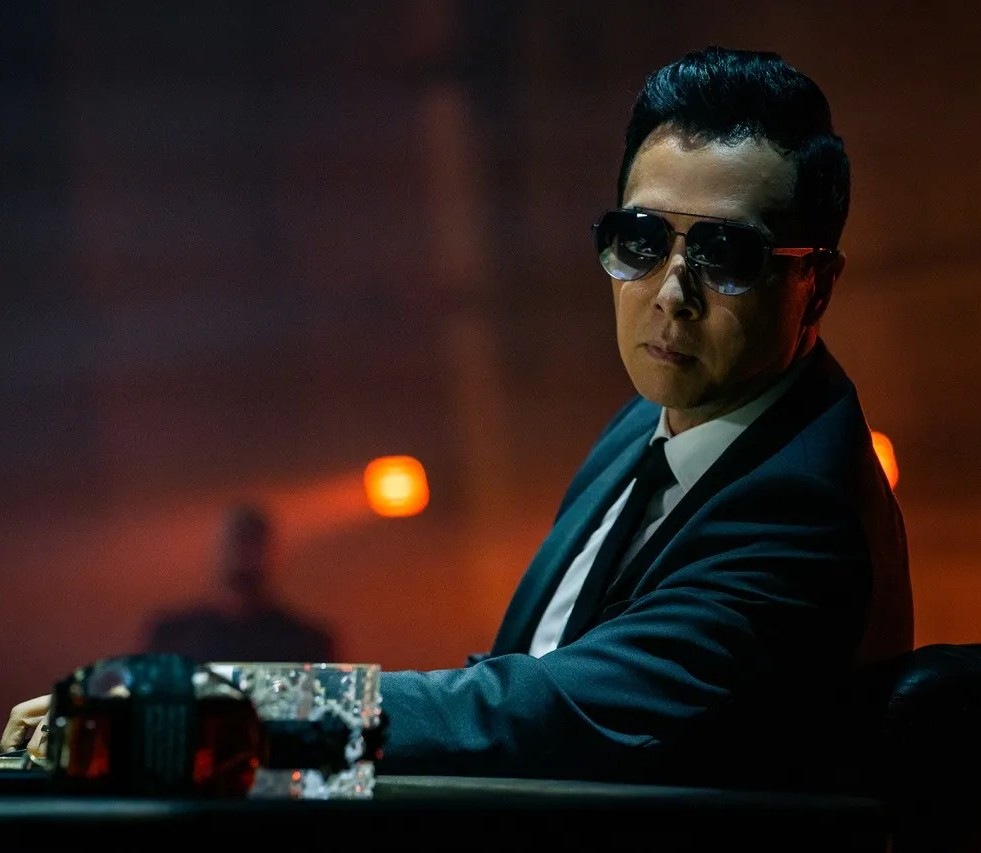
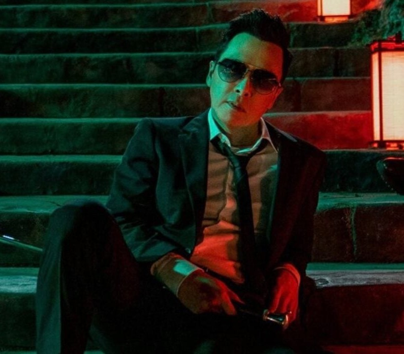

Caine
"The dead are gone. Only the living matter. After my daughter was born... I wanted to leave this life. I thought I did."
"죽은 자는 떠났어. 살아 있는 자만이 중요하지. 내 딸이 태어난 후... 이 삶을 떠나고 싶었어. 떠난 줄 알았지."

Caine
성별: 남자
<<<<<<< HEAD:frontend/Caine.html국적: 일본
소속: 하이테이블
직업: 전문 암살자
관계: 존윅(친구/동료), 코지 시마즈(친구/동료)
상태: 알려지지 않음
=======국적: 홍콩
소속: 하이테이블
직업: 전문 암살자
관계: 존윅(친구/동료), 코지 시마즈(친구/동료)
상태: 살아있음
>>>>>>> 908eb098c34c7512e6a9332f6a54688ffca9c203:Caine.html알려진 문신: 알려지지않음
